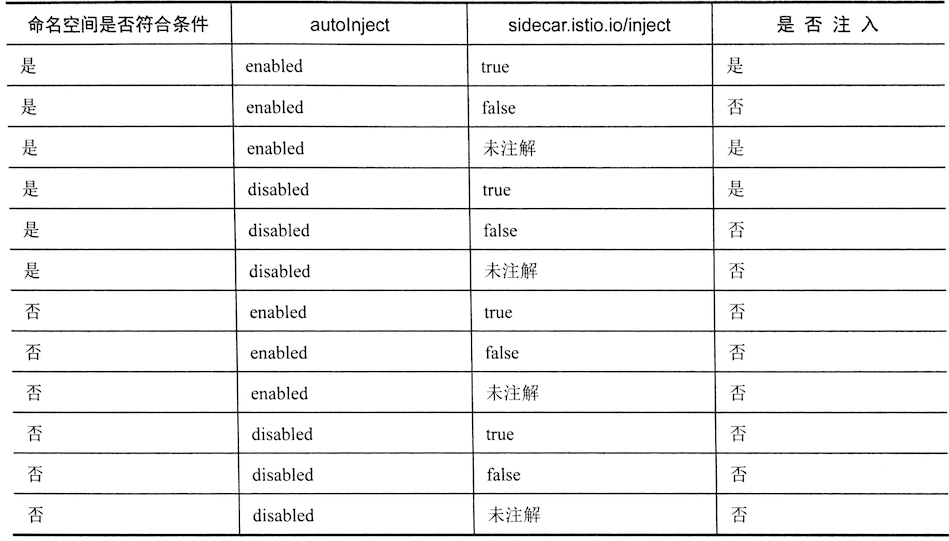

第五节 Istio 常用功能 （自动/手动部署Istio应用）
Istio在微服务体系中提供了为数众多的各种功能，这么多功能难免让人眼花缭乱，本章将会从在网格中部署应用开始，展示Istio的常用功能，包括基本的流量控制、开箱即用的可视化功能等。
本章内容涉及Grafana, Prometheus, Jaeger及Kiali，都是独立的开源项目，各 项目所涉及的内容都非常丰富和深入。
1、在网格中部署应用
我们在第3章中已经使用过istioctl kube-inject命令来为工作负载注人Istio Sidecar，本节会稍微深人地探讨这个功能。
添加一个"-o"参数，将注人结果输出为文件，以便观察：
istioctl kube-inject -f flask.istio.yaml -o flask.istio.injected.yaml
在执行完毕之后，可以看到，这里多出了一个 flask.istio.injected.yaml文件。
打开该文件，将其和源文件flask.istio.yaml进行对比，不难发现其中的Service对象没 有发生任何变化，两个Deployment对象则有很大的改变：
apiVersion: v1
kind: Service
metadata:
name: flaskapp
labels:
app: flaskapp
spec:
selector:
app: flaskapp
ports:
- name: http
port: 80
---
apiVersion: extensions/v1beta1
kind: Deployment
metadata:
creationTimestamp: null
name: flaskapp-v1
spec:
...
sidecar.istio.io/status: '{"version":"4457e141f44dbeb1708490f938c6723acfa1090eef4a5becb97e6329952a2d8d","initContainers":["istio-init"],"containers":["istio-proxy"],"volumes":["istio-envoy","istio-certs"],"imagePullSecrets":null}'
...
spec:
containers:
...
- args:
- proxy
- sidecar
...
env:
...
image: docker.io/istio/proxyv2:1.1.16
imagePullPolicy: IfNotPresent
name: istio-proxy
...
image: docker.io/istio/proxy_init:1.1.16
imagePullPolicy: IfNotPresent
name: istio-init
resources:
limits:
cpu: 100m
memory: 50Mi
requests:
cpu: 10m
memory: 10Mi
securityContext:
capabilities:
add:
- NET_ADMIN
runAsNonRoot: false
runAsUser: 0
volumes:
- emptyDir:
medium: Memory
name: istio-envoy
- name: istio-certs
secret:
optional: true
secretName: istio.default
status: {}
...
我们会发现多,一个被屡次提到的sidecar容器井且出现了一个初始化容器(init-containers)这个初始化容器就是用来劫持应用到Sidecar
接下来就可以使用kubectl 将注人后的YAML清单文件提交到集群里上运行了
$ kubectl apply -f flask.istio.injected.yaml
service/flaskapp unchanged
deployment.extensions/flaskapp-v1 configured
deployment.extensions/flaskapp-v2 configured
除了支持手工注人,Istio还支持对工作负载进行自动注人,并对待注人的工作负载有一定的要求
因为istioctl要根据configmap来获取注入的内容，也就是说执行Istioctl的用户必须能够访问安装了Istio的Kubernetes集群中的这个ConfigMap。
如果因为某些原因无法访问，则还可以在istioctl中使用一个本地的配置文件。
首先用有ConfigMap获取权限的用户身份运行如下命令：
$ kubectl -n istio-system get configmap istio-sidecar-injector -o=jsonpath='{.data.config}' > inject-config.yaml
然后可以对该文件进行任意修改，就可以在istioctl中使用了：
$ istioctl kube-inject --injectConfigFile inject-config.yaml
1-1 对工作负载的要求
目前支持的工作负载类型包括：Job、 DaemonSet、 ReplicaSet、 Pod及Deployment. 对这些工作负载的要求如下。
1.要正确命名服务端口
Service对象中的Port部分必须以“协议名”为前缀，目前支持的协议名包括 http、 http2 、mongo、 redis和grpc，例如，我们的flaskapp中的服务端口就被命名
为“http"。
Istio会根据这些命名来确定为这些端口提供什么样的服务，不符合命名规范的端口会被当作TCP服务，其功能支持范围会大幅缩小。
目前的Istio版本对HTTP, HTTP2及gRPC协议都提供了最大范围的支持。
2.工作负载的Pod必须有关联的Service
为了满足服务发现的需要，所有Pod都必须有关联的服务，因此我们的客户端应用sleep虽然没有开放任何端口，但还是要注册一个Service对象。
另外，官方建议为Pod模板加入两个标签：app和version，分别标注应用名称和版本。这仅仅是个建议，但是Istio的很多默认策略都会引用这两个标签；如果没有这两个标签，就会引发很多不必要的麻烦。
1-2 对工作负载的要求使用自动注入
除了使用istioctl进行手工注入，Istio 还提供了自动注人功能，该功能提供了较为丰富的微调选项，可以帮助用户更灵活地选择注人目标。
在values.yaml中默认包含如下所示的类似代码，可以用于调整自动注人的属性：
autoInject: enabled
sidecarInjectorWebhook:
enabled: true
replicaCount: 1
image: sidecar_injector
enableNamespacesByDefault: false
下面对以上这段代码进行讲解，如下所述。
- 如果将
sidecarInjectorWebhook.enabled设置为true，就会开启Sidecar的自动注入特性。 - 如果将
enableNamespacesByDefault变量赋值为true，就会为所有命名空间开启自动注人功能；如果赋值为false，则只有标签为istio-injection: enabled的命名空间才会开启自动注入功能。 autoInject这个变量命名有歧义，它的enabled/disabled赋值，设置的并不是是否开启自动注人功能，而是在启用自动注人功能之后，对于指定的命名空间内新建的Pod是否进行自动注入。- 如果取值为
enabled，则该命名空间内的Pod只要没有被注解为sidecar.istio.io/inject: "false"，就会自动完成注人； - 如果取值为
disabled，则需要为Pod设置注解sidecar.istio.io/inject: "true", 才会进行注入。
autoInject、命名空间标签及Pod注解相互关联，形成了非常灵活的注入规则。如图所示为各种组合产生的效果列表（命名空间符合条件指的是命名空间被设置了注入标签，或者enableNamespacesByDefault: true)

接下来测试这个功能。默认安装的Istio(也就是使用"-f istio/valus.yaml选项生成的安装清单）启用了自动注人功能, 只要为命名空间设置注人标签, 并且将autoInject设置为enabled。根据在该命名空寂中创建的工作负载就会被自动注人Sidecar了
$ kubectl create ns auto
namespace/auto created
$ kubectl label namespaces auto istio-injection=enabled ❤️❤️❤️
namespace/auto labeled
$ kubectl create ns manually
namespace/manually created
这样就创建两个命名空间其中的auto命名空间被设置了istio-injction=enabled标签
接下来分别在两个命名空间中使用sleep.yaml创建工作负载看看产生的Pod
apiVersion: v1
kind: Service
metadata:
name: sleep
labels:
app: sleep
version: v1
spec:
selector:
app: sleep
version: v1
ports:
- name: ssh
port: 80
---
apiVersion: extensions/v1beta1
kind: Deployment
metadata:
name: sleep
spec:
replicas: 1
template:
metadata:
labels:
app: sleep
version: v1
spec:
containers:
- name: sleep
image: dustise/sleep
imagePullPolicy: Always
---
$ kubectl create -f sleep.yaml -n auto
service/sleep created
deployment.extensions/sleep created
$ kubectl get pod -n auto
NAME READY STATUS RESTARTS AGE
sleep-6c9c898f6c-b7scw 2/2 Running 0 28s
$ kubectl create -f sleep.yaml -n manually
service/sleep created
deployment.extensions/sleep created
- 通过对比可以看出,
auto命名空间中的过程；Pod被注人了Sidecar并开始了初始过程; - 而
manually命名空间的Pod保持原样 ，没有进行注入
不管是手工注人还是自动注人，都可以通过编辑Istio system命名空间中 ConfigMap istio-sidecar-injector，来影响注人的效果
例如在1.1.0版本中Istio 自动注人可以报据标签例外设置.
不管命名空间标签及策略如何, 对符合标签选择器要求的Pod都不进行注入
可以在istio-sidecar-injector Configmap中加入这一例外设署
istio/templates/sidecar-injector-configmap.yaml
$ kubectl -n istio-system describe configmap istio-sidecar-injector
apiVersion: v1
kind: ConfigMap
metadata:
name: istio-sidecar-injector
data:
config: |-
policy: enabled
neverInjectSelector:
- matchExpressions:
- {key: openshift.io/build.name, operator: Exists}
- matchExpressions:
- {key: openshift.io/deployer-pod-for.name, operator: Exists}
template: |-
initContainers:
...
如上所示的neverInjectSelector字段是一个Kubernetes标签选择器的数组。
不同元素之间是“或”的关系，在第一次发现有符合条件的标签之后会跳过其他判断。
上面的语句意味着：对于包含openshift.io/build.name或者openshift.io/deployer-pod-for.name标签的Pod，不管标签取值是什么，都不会进行注入。
与之相对的还有一个alwaysInjectSelector标签，符合这一选择器的Pod，不管全局策略如何，都会被注人Sidecar.
值得注意的是，Pod注解还有更高的优先级，一如果Pod注解包含 sidecar.istio.io/inject: "true/false"，则会被优先处理。
所以，自动注人的评估顺序是：
Pod注解 -> NeverInjectSelector 一> Always InjsectSelector 一> 命名空间策略
如果按照前面的介绍进行操作，例如给命名空间打标签，则结果是Pod没有被注人。或者刚好相反，Pod明明被注解为sidecar.istio.io/inject: "false"，还是被注人了。这是为什么？
可以看看sidecar-injector Pod的日志：
$ pod=$(kubectl -n istio-system get pods -l istio=sidecar-injector -o jsonpath='{.items[0].metadata.name}')
$ echo $pod
istio-sidecar-injector-6b57b9cbd-dd4qt
$ kubectl logs $pod -n istio-system
然后可以创建业务Pod看看日志输出的其体内容, 要看到更详细的日志（经常会很有用）则可以编辑sidecar-iniector Deployment 对象, 给它加上参数 "--log_output_level=default:debug";
$ kubectl -n istio-system edit deployment istio-sidecar-injector
...
containers:
- args:
- --caCertFile=/etc/istio/certs/root-cert.pem
- --tlsCertFile=/etc/istio/certs/cert-chain.pem
- --tlsKeyFile=/etc/istio/certs/key.pem
- --injectConfig=/etc/istio/inject/config
- --meshConfig=/etc/istio/config/mesh
- --healthCheckInterval=2s
- --healthCheckFile=/health
- --log_output_level=default:debug
...
编辑成功后pod会重启
$ pod=$(kubectl -n istio-system get pods -l istio=sidec
ar-injector -o jsonpath='{.items[0].metadata.name}')
$ echo $pod
istio-sidecar-injector-77dfb5c66b-lzb8p
$ kubectl logs $pod -n istio-system
...
:{\"matchLabels\":{\"istio-injection\":\"enabled\"}},\
...
如果在日志中还是找不到发生问题的原因，就代表side-injector没有收到Pod创建的通知，也就不会触发自动注入的操作了
这可能是因为命名空间没有正确设置标签导致的，因此需要检查命名空间的标签及MutatingWebhookConfiguration的配置
在默认情况下，命名空间应该设置istio-injection=enabled，可以使用
$ kubectl -n istio-system edit MutatinWebhookConfiguration isitio-sidecar-injector
命令检查namespaceSelecor字段的内容
在完成排查之后， 可以再次编辑Sidecar-injector Deployment对象，清除新加人的参数.
1-3 准备测试应用
把 default namespace 设置为自动注入, 并在其中运行flaskapp以及sleep两个版本
$ kubectl label namespace default istio-injection=enabled
namespace/default labeled
sleep.istio.yaml
apiVersion: v1
kind: Service
metadata:
name: sleep
labels:
app: sleep
spec:
selector:
app: sleep
ports:
- name: ssh
port: 80
---
apiVersion: extensions/v1beta1
kind: Deployment
metadata:
name: sleep-v1
spec:
replicas: 1
template:
metadata:
labels:
app: sleep
version: v1
spec:
containers:
- name: sleep
image: dustise/sleep
imagePullPolicy: Always
---
apiVersion: extensions/v1beta1
kind: Deployment
metadata:
name: sleep-v2
spec:
replicas: 1
template:
metadata:
labels:
app: sleep
version: v2
spec:
containers:
- name: sleep
image: dustise/sleep
imagePullPolicy: Always
$ kubectl apply -f sleep.istio.yaml
service/sleep created
deployment.extensions/sleep-v1 created
deployment.extensions/sleep-v2 created
$ kubectl get pods | grep sleep
sleep-v1-548d87cc5c-fg9ng 2/2 Running 0 21s
sleep-v2-7c6b874968-qfkvt 2/2 Running 0 21s
2、修改Istio配置
Istio经常有变更配置的需求， 这时可以用”Helm“ 的 --set的参数来完成这一任务
在默认情况下，Istio会将变量 sidecarInjectorWebhook.enabled赋值为true也就是启用自动注入功能
如果想关闭，则在之前使用Helm安装Istio的命令中加入sidecarInjectorWebhook.enabled=false的参数即可。例如
$ helm template istio \
--name istio --namespace istio-system \
--set sidecarInjectorWebhook.enabled=false
以上是对官方说法的一个急结但是事实上并没有这么简单,
Istio的Sidecar自动注人功能是通过Kubernetes的mutating控制器来完成的, 如果启用了自动生效的Istio 安装清单就会生成一个名称为Istio-sidecar-injector的 mutatingwebhookconfigurations的对象， 在这个对象中保存的就是自动注人的配置
报据Helm和Kubernetes的下作原理重复执行kubecet apply命令是不会进行删除操作的, 因此通过上面的操作生成的清单一旦被提交， 后果就是mutating控制器继续使用istio-sidecar-injector的配置进行下作
因此这种方式只针对新增或修改操作生效,对于删除操作是无效的